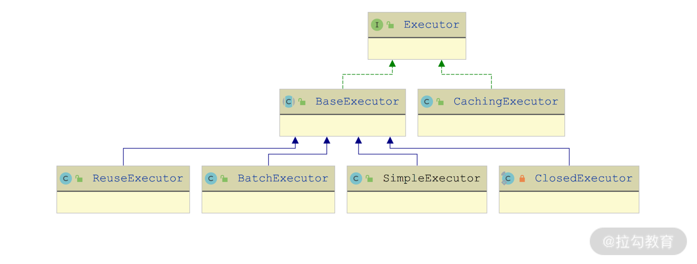
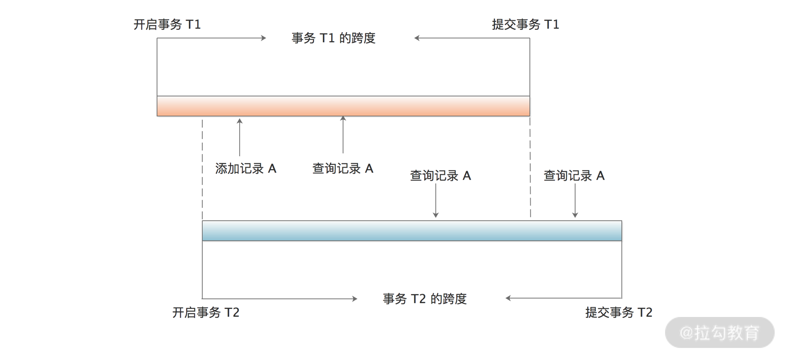

- 00 开篇词 领略 MyBatis 设计思维，突破持久化技术瓶颈.md.html
- 01 常见持久层框架赏析，到底是什么让你选择 MyBatis？.md.html
- 02 订单系统持久层示例分析，20 分钟带你快速上手 MyBatis.md.html
- 03 MyBatis 源码环境搭建及整体架构解析.md.html
- 04 MyBatis 反射工具箱：带你领略不一样的反射设计思路.md.html
- 05 数据库类型体系与 Java 类型体系之间的“爱恨情仇”.md.html
- 06 日志框架千千万，MyBatis 都能兼容的秘密是什么？.md.html
- 07 深入数据源和事务，把握持久化框架的两个关键命脉.md.html
- 08 Mapper 文件与 Java 接口的优雅映射之道.md.html
- 09 基于 MyBatis 缓存分析装饰器模式的最佳实践.md.html
- 10 鸟瞰 MyBatis 初始化，把握 MyBatis 启动流程脉络（上）.md.html
- 11 鸟瞰 MyBatis 初始化，把握 MyBatis 启动流程脉络（下）.md.html
- 12 深入分析动态 SQL 语句解析全流程（上）.md.html
- 13 深入分析动态 SQL 语句解析全流程（下）.md.html
- 14 探究 MyBatis 结果集映射机制背后的秘密（上）.md.html
- 15 探究 MyBatis 结果集映射机制背后的秘密（下）.md.html
- 16 StatementHandler：参数绑定、SQL 执行和结果映射的奠基者.md.html
- 17 Executor 才是执行 SQL 语句的幕后推手（上）.md.html
- 18 Executor 才是执行 SQL 语句的幕后推手（下）.md.html
- 19 深入 MyBatis 内核与业务逻辑的桥梁——接口层.md.html
- 20 插件体系让 MyBatis 世界更加精彩.md.html
- 21 深挖 MyBatis 与 Spring 集成底层原理.md.html
- 22 基于 MyBatis 的衍生框架一览.md.html
- 23 结束语 会使用只能默默“搬砖”，懂原理才能快速晋升.md.html
18 Executor 才是执行 SQL 语句的幕后推手（下）
在上一讲中，我们首先介绍了模板方法模式的相关知识，然后介绍了 Executor 接口的核心方法，最后分析了 BaseExecutor 抽象类是如何利用模板方法模式为其他 Executor 抽象了一级缓存和事务管理的能力。这一讲，我们再来介绍剩余的四个重点 Executor 实现。

Executor 接口继承关系图
SimpleExecutor
我们来看 BaseExecutor 的第一个子类—— SimpleExecutor，同时它也是 Executor 接口最简单的实现。
正如上一讲中分析的那样，BaseExecutor 通过模板方法模式实现了读写一级缓存、事务管理等不随场景变化的基础方法，在 SimpleExecutor、ReuseExecutor、BatchExecutor 等实现类中，不再处理这些不变的逻辑，而只要关注 4 个 do*() 方法的实现即可。
这里我们重点来看 SimpleExecutor 中 doQuery() 方法的实现逻辑。
- 通过 newStatementHandler() 方法创建 StatementHandler 对象，其中会根据 MappedStatement.statementType 配置创建相应的 StatementHandler 实现对象，并添加 RoutingStatementHandler 装饰器。
- 通过 prepareStatement() 方法初始化 Statement 对象，其中还依赖 ParameterHandler 填充 SQL 语句中的占位符。
- 通过 StatementHandler.query() 方法执行 SQL 语句，并通过我们前面[14]和[15]讲介绍的 DefaultResultSetHandler 将 ResultSet 映射成结果对象并返回。
doQuery() 方法的核心代码实现如下所示：
public <E> List<E> doQuery(MappedStatement ms, Object parameter, RowBounds rowBounds, ResultHandler resultHandler, BoundSql boundSql) throws SQLException {
Statement stmt = null;
try {
Configuration configuration = ms.getConfiguration();
// 创建StatementHandler对象，实际返回的是RoutingStatementHandler对象（我们在第16讲介绍过）
// 其中根据MappedStatement.statementType选择具体的StatementHandler实现
StatementHandler handler = configuration.newStatementHandler(wrapper, ms, parameter, rowBounds, resultHandler, boundSql);
// 完成StatementHandler的创建和初始化，该方法会调用StatementHandler.prepare()方法创建
// Statement对象，然后调用StatementHandler.parameterize()方法处理占位符
stmt = prepareStatement(handler, ms.getStatementLog());
// 调用StatementHandler.query()方法，执行SQL语句，并通过ResultSetHandler完成结果集的映射
return handler.query(stmt, resultHandler);
} finally {
closeStatement(stmt);
}
}
SimpleExecutor 中的 doQueryCursor()、update() 等方法实现与 doQuery() 方法的实现基本类似，这里不再展开介绍，你若感兴趣的话可以参考源码进行分析。
ReuseExecutor
你如果有过 JDBC 优化经验的话，可能会知道重用 Statement 对象是一种常见的优化手段，主要目的是减少 SQL 预编译开销，同时还会降低 Statement 对象的创建和销毁频率，这在一定程度上可以提升系统性能。
ReuseExecutor 这个 BaseExecutor 实现就实现了重用 Statement 的优化，ReuseExecutor 维护了一个 statementMap 字段（HashMap<String, Statement>类型）来缓存已有的 Statement 对象，该缓存的 Key 是 SQL 模板，Value 是 SQL 模板对应的 Statement 对象。这样在执行相同 SQL 模板时，我们就可以复用 Statement 对象了。
ReuseExecutor 中的 do*() 方法实现与前面介绍的 SimpleExecutor 实现完全一样，两者唯一的区别在于其中依赖的 prepareStatement() 方法：SimpleExecutor 每次都会创建全新的 Statement 对象，ReuseExecutor 则是先尝试查询 statementMap 缓存，如果缓存命中，则会重用其中的 Statement 对象。
另外，在事务提交/回滚以及 Executor 关闭的时候，需要同时关闭 statementMap 集合中缓存的全部 Statement 对象，这部分逻辑是在 doFlushStatements() 方法中实现的，核心代码如下：
public List<BatchResult> doFlushStatements(boolean isRollback) {
// 关闭statementMap集合中缓存的全部Statement对象
for (Statement stmt : statementMap.values()) {
closeStatement(stmt);
}
// 清空statementMap集合
statementMap.clear();
return Collections.emptyList();
}
BatchExecutor
批处理是 JDBC 编程中的另一种优化手段。
JDBC 在执行 SQL 语句时，会将 SQL 语句以及实参通过网络请求的方式发送到数据库，一次执行一条 SQL 语句，一方面会减小请求包的有效负载，另一个方面会增加耗费在网络通信上的时间。通过批处理的方式，我们就可以在 JDBC 客户端缓存多条 SQL 语句，然后在 flush 或缓存满的时候，将多条 SQL 语句打包发送到数据库执行，这样就可以有效地降低上述两方面的损耗，从而提高系统性能。
不过，有一点需要特别注意：每次向数据库发送的 SQL 语句的条数是有上限的，如果批量执行的时候超过这个上限值，数据库就会抛出异常，拒绝执行这一批 SQL 语句，所以我们需要控制批量发送 SQL 语句的条数和频率。
BatchExecutor 是用于实现批处理的 Executor 实现，其中维护了一个 List<Statement> 集合（statementList 字段）用来缓存一批 SQL，每个 Statement 可以写入多条 SQL。
我们知道 JDBC 的批处理操作只支持 insert、update、delete 等修改操作，也就是说 BatchExecutor 对批处理的实现集中在 doUpdate() 方法中。在 doUpdate() 方法中追加一条待执行的 SQL 语句时，BatchExecutor 会先将该条 SQL 语句与最近一次追加的 SQL 语句进行比较，如果相同，则追加到最近一次使用的 Statement 对象中；如果不同，则追加到一个全新的 Statement 对象，同时会将新建的 Statement 对象放入 statementList 缓存中。
下面是 BatchExecutor.doUpdate() 方法的核心逻辑：
public int doUpdate(MappedStatement ms, Object parameterObject) throws SQLException {
final Configuration configuration = ms.getConfiguration();
// 创建StatementHandler对象
final StatementHandler handler = configuration.newStatementHandler(this, ms, parameterObject, RowBounds.DEFAULT, null, null);
final BoundSql boundSql = handler.getBoundSql();
// 获取此次追加的SQL模板
final String sql = boundSql.getSql();
final Statement stmt;
// 比较此次追加的SQL模板与最近一次追加的SQL模板，以及两个MappedStatement对象
if (sql.equals(currentSql) && ms.equals(currentStatement)) {
// 两者相同，则获取statementList集合中最后一个Statement对象
int last = statementList.size() - 1;
stmt = statementList.get(last);
applyTransactionTimeout(stmt);
handler.parameterize(stmt); // 设置实参
// 查找该Statement对象对应的BatchResult对象，并记录用户传入的实参
BatchResult batchResult = batchResultList.get(last);
batchResult.addParameterObject(parameterObject);
} else {
Connection connection = getConnection(ms.getStatementLog());
// 创建新的Statement对象
stmt = handler.prepare(connection, transaction.getTimeout());
handler.parameterize(stmt);// 设置实参
// 更新currentSql和currentStatement
currentSql = sql;
currentStatement = ms;
// 将新创建的Statement对象添加到statementList集合中
statementList.add(stmt);
// 为新Statement对象添加新的BatchResult对象
batchResultList.add(new BatchResult(ms, sql, parameterObject));
}
handler.batch(stmt);
return BATCH_UPDATE_RETURN_VALUE;
}
这里使用到的 BatchResult 用于记录批处理的结果，一个 BatchResult 对象与一个 Statement 对象对应，BatchResult 中维护了一个 updateCounts 字段（int[] 数组类型）来记录关联 Statement 对象执行批处理的结果。
添加完待执行的 SQL 语句之后，我们再来看一下 doFlushStatements() 方法，其中会通过 Statement.executeBatch() 方法批量执行 SQL，然后 SQL 语句影响行数以及数据库生成的主键填充到相应的 BatchResult 对象中返回。下面是其核心实现：
public List<BatchResult> doFlushStatements(boolean isRollback) throws SQLException {
try {
// 用于储存批处理的结果
List<BatchResult> results = new ArrayList<>();
// 如果明确指定了要回滚事务，则直接返回空集合，忽略statementList集合中记录的SQL语句
if (isRollback) {
return Collections.emptyList();
}
for (int i = 0, n = statementList.size(); i < n; i++) { // 遍历statementList集合
Statement stmt = statementList.get(i);// 获取Statement对象
applyTransactionTimeout(stmt);
BatchResult batchResult = batchResultList.get(i); // 获取对应BatchResult对象
try {
// 调用Statement.executeBatch()方法批量执行其中记录的SQL语句，并使用返回的int数组
// 更新BatchResult.updateCounts字段，其中每一个元素都表示一条SQL语句影响的记录条数
batchResult.setUpdateCounts(stmt.executeBatch());
MappedStatement ms = batchResult.getMappedStatement();
List<Object> parameterObjects = batchResult.getParameterObjects();
// 获取配置的KeyGenerator对象
KeyGenerator keyGenerator = ms.getKeyGenerator();
if (Jdbc3KeyGenerator.class.equals(keyGenerator.getClass())) {
// 获取数据库生成的主键，并记录到实参中对应的字段
Jdbc3KeyGenerator jdbc3KeyGenerator = (Jdbc3KeyGenerator) keyGenerator;
jdbc3KeyGenerator.processBatch(ms, stmt, parameterObjects);
} else if (!NoKeyGenerator.class.equals(keyGenerator.getClass())) {
// 其他类型的KeyGenerator，会调用其processAfter()方法
for (Object parameter : parameterObjects) {
keyGenerator.processAfter(this, ms, stmt, parameter);
}
}
closeStatement(stmt);
} catch (BatchUpdateException e) {
// 异常处理逻辑
}
// 添加BatchResult到results集合
results.add(batchResult);
}
return results;
} finally {
// 释放资源
}
}
CachingExecutor
CachingExecutor 是我们最后一个要介绍的 Executor 接口实现类，它是一个 Executor 装饰器实现，会在其他 Executor 的基础之上添加二级缓存的相关功能。在上一讲中，我们已经介绍过了一级缓存，下面就接着讲解二级缓存相关的内容。
1. 二级缓存
我们知道一级缓存的生命周期默认与 SqlSession 相同，而这里介绍的 MyBatis 中的二级缓存则与应用程序的生命周期相同。与二级缓存相关的配置主要有下面三项。
第一项，二级缓存全局开关。这个全局开关是 mybatis-config.xml 配置文件中的 cacheEnabled 配置项。当 cacheEnabled 被设置为 true 时，才会开启二级缓存功能，开启二级缓存功能之后，下面两项的配置才会控制二级缓存的行为。
第二项，命名空间级别开关。在 Mapper 配置文件中，可以通过配置 <cache> 标签或 <cache-ref> 标签开启二级缓存功能。
- 在解析到
<cache>标签时，MyBatis 会为当前 Mapper.xml 文件对应的命名空间创建一个关联的 Cache 对象（默认为 PerpetualCache 类型的对象），作为其二级缓存的实现。此外，<cache>标签中还提供了一个 type 属性，我们可以通过该属性使用自定义的 Cache 类型。 - 在解析到
<cache-ref>标签时，MyBatis 并不会创建新的 Cache 对象，而是根据<cache-ref>标签的 namespace 属性查找指定命名空间对应的 Cache 对象，然后让当前命名空间与指定命名空间共享同一个 Cache 对象。
第三项，语句级别开关。我们可以通过 <select> 标签中的 useCache 属性，控制该 select 语句查询到的结果对象是否保存到二级缓存中，useCache 属性默认值为 true。
2. TransactionalCache
了解了二级缓存的生命周期、基本概念以及相关配置之后，我们开始介绍 CachingExecutor 依赖的底层组件。
CachingExecutor 底层除了依赖 PerpetualCache 实现来缓存数据之外，还会依赖 TransactionalCache 和 TransactionalCacheManager 两个组件，下面我们就一一详细介绍下。
TransactionalCache 是 Cache 接口众多实现之一，它也是一个装饰器，用来记录一个事务中添加到二级缓存中的缓存。
TransactionalCache 中的 entriesToAddOnCommit 字段（Map<Object, Object> 类型）用来暂存当前事务中添加到二级缓存中的数据，这些数据在事务提交时才会真正添加到底层的 Cache 对象（也就是二级缓存）中。这一点我们可以从 TransactionalCache 的 putObject() 方法以及 flushPendingEntries() 方法（commit() 方法会调用该方法）中看到相关代码实现：
public void putObject(Object key, Object object) {
// 将数据暂存到entriesToAddOnCommit集合
entriesToAddOnCommit.put(key, object);
}
private void flushPendingEntries() {
for (Map.Entry<Object, Object> entry : entriesToAddOnCommit.entrySet()) {
// 将entriesToAddOnCommit集合中的数据添加到二级缓存
delegate.putObject(entry.getKey(), entry.getValue());
}
... // 其他逻辑
}
那为什么要在事务提交时才将 entriesToAddOnCommit 集合中的缓存数据写入底层真正的二级缓存中，而不是像操作一级缓存那样，每次查询都直接写入缓存呢？其实这是为了防止出现“脏读”。
我们假设当前数据库的隔离级别是“不可重复读”，如下图所示，两个业务线程分别开启了 T1、T2 两个事务：
- 在事务 T1 中添加了记录 A，之后查询记录 A；
- 事务 T2 会查询记录 A。

两事务并发操作的示意图
如果事务 T1 查询记录 A 时，就将 A 对应的结果对象写入二级缓存，那在事务 T2 查询记录 A 时，会从二级缓存中直接拿到结果对象。此时的事务 T1 仍然未提交，也就出现了“脏读”。
我们按照 TransactionalCache 的实现再来分析下，事务 T1 查询 A 数据的时候，未命中二级缓存，就会击穿到数据库，因为写入和读取 A 都是在事务 T1 中，所以能够查询成功，同时更新 entriesToAddOnCommit 集合。事务 T2 查询记录 A 时，同样也会击穿二级缓存，访问数据库，因为此时写入和读取 A 是不同的事务，且数据库的事务隔离级别为“不可重复读”，这就导致事务 T2 无法查询到记录 A，也就避免了“脏读”。
如上图所示，事务 T1 在提交时，会将 entriesToAddOnCommit 中的数据添加到二级缓存中，所以事务 T2 第二次查询记录 A 时，会命中二级缓存，也就出现了同一事务中多次读取的结果不同的现象，也就是我们说的“不可重复读”。
TransactionalCache 中的另一个核心字段是 entriesMissedInCache，它用来记录未命中的 CacheKey 对象。在 getObject() 方法中，我们可以看到写入 entriesMissedInCache 集合的相关代码片段：
public Object getObject(Object key) {
Object object = delegate.getObject(key);
if (object == null) {
entriesMissedInCache.add(key);
}
... // 其他逻辑
}
在事务提交的时候，会将 entriesMissedInCache 集合中的 CacheKey 写入底层的二级缓存（写入时的 Value 为 null）。在事务回滚时，会调用底层二级缓存的 removeObject() 方法，删除 entriesMissedInCache 集合中 CacheKey。
你可能会问，为什么要用 entriesMissedInCache 集合记录未命中缓存的 CacheKey 呢？为什么还要在缓存结束时处理这些 CacheKey 呢？这主要是与[第 9 讲]介绍的 BlockingCache 装饰器相关。在前面介绍 Cache 时我们提到过，CacheBuilder 默认会添加 BlockingCache 这个装饰器，而 BlockingCache 的 getObject() 方法会有给 CacheKey 加锁的逻辑，需要在 putObject() 方法或 removeObject() 方法中解锁，否则这个 CacheKey 会被一直锁住，无法使用。
看完 TransactionalCache 的核心实现之后，我们再来看 TransactionalCache 的管理者—— TransactionalCacheManager，其中定义了一个 transactionalCaches 字段（HashMap<Cache, TransactionalCache>类型）维护当前 CachingExecutor 使用到的二级缓存，该集合的 Key 是二级缓存对象，Value 是装饰二级缓存的 TransactionalCache 对象。
TransactionalCacheManager 中的方法实现都比较简单，都是基于 transactionalCaches 集合以及 TransactionalCache 的同名方法实现的，这里不再展开介绍，你若感兴趣的话可以参考源码进行分析。
3. 核心实现
了解了二级缓存基本概念以及 TransactionalCache 核心实现之后，我们再来看 CachingExecutor 的核心实现。
CachingExecutor 作为一个装饰器，其中自然会维护一个 Executor 类型字段指向被装饰的 Executor 对象，同时它还创建了一个 TransactionalCacheManager 对象来管理使用到的二级缓存。
CachingExecutor 的核心在于 query() 方法，其核心操作大致可总结为如下。
- 获取 BoundSql 对象，创建查询语句对应的 CacheKey 对象。
- 尝试获取当前命名空间使用的二级缓存，如果没有指定二级缓存，则表示未开启二级缓存功能。如果未开启二级缓存功能，则直接使用被装饰的 Executor 对象进行数据库查询操作。如果开启了二级缓存功能，则继续后面的步骤。
- 查询二级缓存，这里使用到 TransactionalCacheManager.getObject() 方法，如果二级缓存命中，则直接将该结果对象返回。
- 如果二级缓存未命中，则通过被装饰的 Executor 对象进行查询。正如前面介绍的那样，BaseExecutor 会先查询一级缓存，如果一级缓存未命中时，才会真正查询数据库。最后，会将查询到的结果对象放入 TransactionalCache.entriesToAddOnCommit 集合中暂存，等待事务提交时再写入二级缓存。
下面是 CachingExecutor.query() 方法的核心代码片段：
public <E> List<E> query(MappedStatement ms, Object parameterObject, RowBounds rowBounds, ResultHandler resultHandler) throws SQLException {
// 获取BoundSql对象
BoundSql boundSql = ms.getBoundSql(parameterObject);
// 创建相应的CacheKey
CacheKey key = createCacheKey(ms, parameterObject, rowBounds, boundSql);
// 调用下面的query()方法重载
return query(ms, parameterObject, rowBounds, resultHandler, key, boundSql);
}
public <E> List<E> query(MappedStatement ms, Object parameterObject, RowBounds rowBounds, ResultHandler resultHandler, CacheKey key, BoundSql boundSql)
throws SQLException {
Cache cache = ms.getCache(); // 获取该命名空间使用的二级缓存
if (cache != null) { // 是否开启了二级缓存功能
flushCacheIfRequired(ms); // 根据<select>标签配置决定是否需要清空二级缓存
// 检测useCache配置以及是否使用了resultHandler配置
if (ms.isUseCache() && resultHandler == null) {
ensureNoOutParams(ms, boundSql); // 是否包含输出参数
// 查询二级缓存
List<E> list = (List<E>) tcm.getObject(cache, key);
if (list == null) {
// 二级缓存未命中，通过被装饰的Executor对象查询结果对象
list = delegate.query(ms, parameterObject, rowBounds, resultHandler, key, boundSql);
// 将查询结果放入TransactionalCache.entriesToAddOnCommit集合中暂存
tcm.putObject(cache, key, list);
}
return list;
}
}
// 如果未开启二级缓存，直接通过被装饰的Executor对象查询结果对象
return delegate.query(ms, parameterObject, rowBounds, resultHandler, key, boundSql);
}
总结
紧接上一讲的内容，我们详细分析了 Executor 接口的核心实现类。
- 首先介绍了最常用、也是最简单的 Executor 实现类—— SimpleExecutor 实现，它底层完全依赖 StatementHandler、DefaultResultSetHandler 和 JDBC API 完成数据库查询和结果集映射。
- 接下来讲解了 ReuseExecutor 和 BatchExecutor 实现，其中 ReuseExecutor 实现了 Statement 对象的重用，而 BatchExecutor 实现了批处理的相关逻辑。
- 最后讲解了 CachingExecutor 实现，其中重点介绍了二级缓存的内容以及 CachingExecutor 底层的 TransactionalCache、TransactionalCacheManager 等核心组件。